起因
最近在看偶然从PT站下载的《梁思成和林徽因》，之前的OS和AI老师，现在在研究计算艺术史的张彬彬老师最近在朋友圈也提到了《营造法式》，加上最近打算去从七月就说想去的黄山和黄山脚下的徽派小镇玩，似乎不得不了解一点建筑艺术。
世界上的建筑风格太多了，我只能简单总结一下我见过的中式建筑。
中国建筑
这篇文章仍以维基百科为主要参考，维基百科上有两个条目，中国传统建筑和中国建筑。
由于幅员辽阔，各处的气候、人文、地质等条件各不相同，而形成了中国各具特色的建筑风格。尤其民居形式更为丰富多彩。如南方的干阑式建筑、西北的窑洞建筑、游牧民族的毡包建筑、北方的四合院建筑等等。传统中国建筑更加塑造了整个东亚的建筑体系，朝鲜、越南、蒙古、琉球、日本等汉字文化圈地区均受中国傅统文化影响。
中国传统建筑
相对于西方古建筑的砖石结构体系来说，中国古建筑是独立的机构体系，其最大的特点有四（出自梁思成《中国建筑史》）：（读到这莫名想起了1666年伦敦的那把大火）
- 以木结构体系为主。砖石结构多用于塔式建筑。金属建筑以铜为主，著名的铜建筑实例有北京颐和园宝云阁、湖北武当山金殿和昆明太和宫金殿。
- 中国木结构体系历来采用构架制的结构原理：以四根立柱，上加横梁、竖枋而构成“间”，一般建筑由奇数间构成，如三、五、七、九间。等级越高，紫禁城太和殿为十一开间，是现存最高等级的木构古建筑。
- 斗栱是中国木架建结构中的关键部件，其作用是在柱子上伸出悬臂梁承托出檐部分的重量。
- 特异的外部轮廓：多层台基，色彩鲜艳的曲线坡面屋顶，院落式的建筑群，展现广阔空。两千多年前汉墓砖画上已经有院落建筑的表现，及至明清最宏大的建筑群——紫禁城，也采用的复杂的围合形式。
关于中国古建结构，这篇三亚博物馆的常识科普写得最好（很多内容同样源自梁思成的《中国建筑史》），实际上大多中国传统建筑风格都是以此为基础的。
构架
以立柱四根，上施梁、枋（按开间方向连贯两柱间的横木为梁；按进深方向连贯两柱间的横木为枋），牵制而成为一“间”。
梁可数层重叠称“梁架”。每层缩短如梯级，逐级增高称“举折”，左右两梁端，每级上承长榑，直至最上为脊榑，故可有五榑，七榑至十一榑不等，视梁架之层数而定。每两榑之间，密布栉篦并列之椽，构成斜坡屋顶之骨干；上加望板，始覆以瓦葺(qì, 茅草)。四柱间之位置称“间”。
此种构架制之特点，在使建筑物上部之一切荷载均由构架负担；承重者为其立柱与其梁枋，不借力于高墙厚壁之垒砌。建筑物中所有墙壁，无论其为砖石或为木板，均为“隔断墙”（Curtain Wall），非负重之部分。
是故门窗之分配毫不受墙壁之限制，而墙壁之设施，亦仅视分隔之需要。欧洲建筑中，唯现代之钢架及钢筋混凝土之构架在原则上与此木质之构架建筑相同。所异者材料及科学程度之不同耳。谚语“墙倒屋不塌”也正是这种构架制的真实写照。
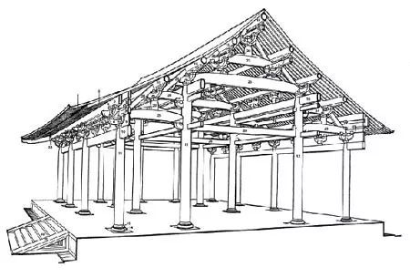
开间（面宽）和进深
开间是房间的主采光面成为开间（面宽），与其垂直的称为进深（由门口向屋里延伸的深度），是指住宅的实际长度。
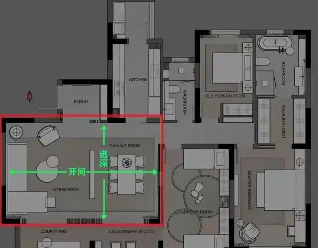
因此对于坐北朝南的古代建筑，梁是东西向的横木（起主要稳定和承重作用），枋是南北向的横木（辅助承重稳定、起连接作用）。
三分
其中官式建筑屋顶体型硕大、出挑深远是建筑造型中最重要的部分。
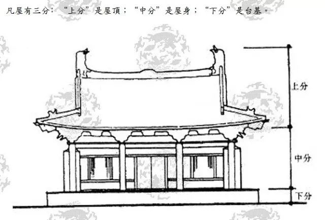
屋顶
除了实用，主要考虑等级礼制，庑wǔ殿顶、歇山顶、悬山顶、硬山顶各有其使用的规则。等级从高到低依次为：重檐庑殿顶>重檐歇山顶>单檐庑殿顶>单檐歇山顶>悬山顶>硬山顶。
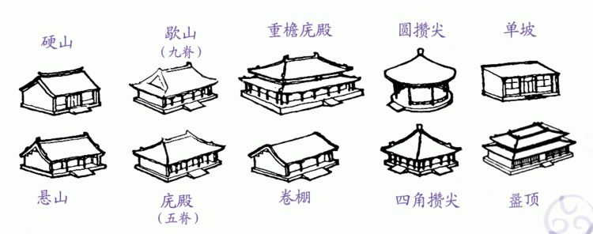
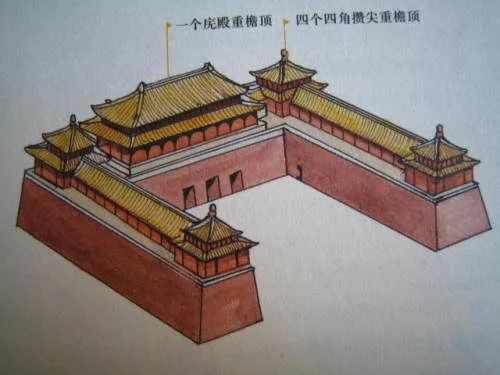
屋脊
屋顶两坡面相交隆起之处，一般用瓦条和砖垒砌而成。最初是一种防漏措施，后演变成优美的曲线轮廓和活泼的屋顶装饰。屋脊的位置不同，有不同的名称：正脊、垂脊、戗脊、博脊。
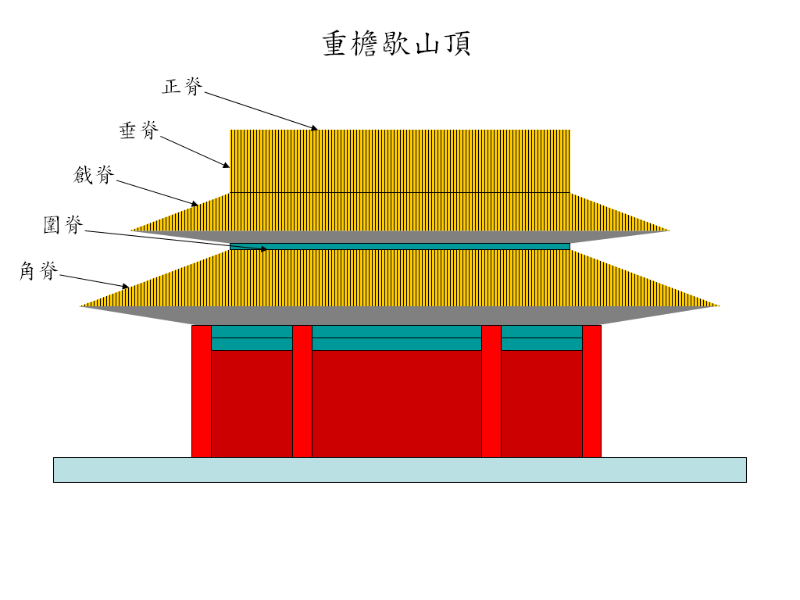
屋顶装饰
以前常看到的正脊上翘起来的角叫吻兽。
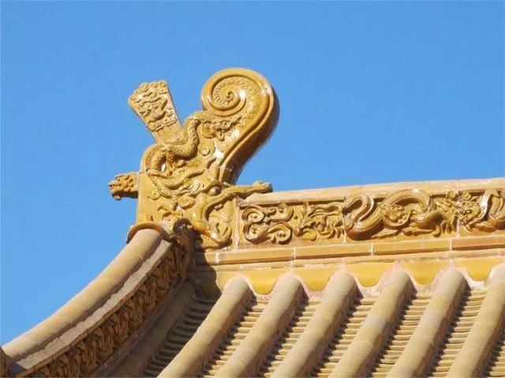
明代的这个玄鉴楼也能很好地示意。
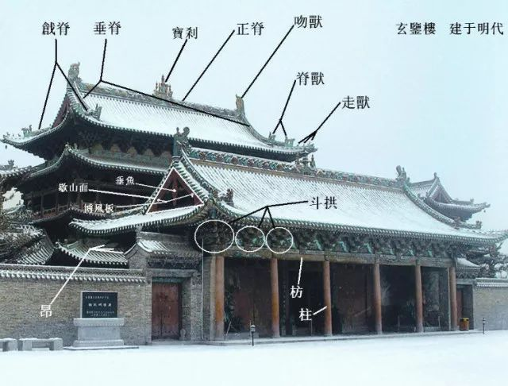
另一个比较重要的是瓦作。
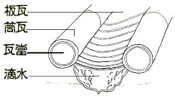
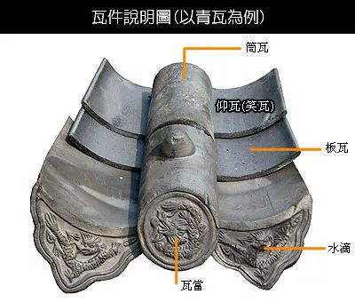
板瓦两侧称为瓦翅，瓦翅向上铺在屋顶为仰板瓦，其上可覆筒瓦，构成筒瓦屋顶（上2图，筒瓦一般以粘土为材料，一般用于大型庙宇、宫殿）；也可覆瓦翅向下的板瓦，构成仰合瓦屋顶（下2图，下也有板瓦示意图）。


筒瓦前面的瓦当是屋檐最前端的一片圆型挡片瓦，是用以装饰美化和蔽护建筑物檐头的建筑附件。
板瓦每一列形成一条排水沟为“一陇”，每陇最下一块带有如意头状者叫做“滴水”。
斗拱
斗拱在宋代被称为铺作，它是中国木构架建筑中最富有特色的结构构件，因其重要的作用，故而成为我国建筑学会的会徽，梁思成曾是领导人。

斗拱位于立柱和横梁交接处（见上图），由水平放置的方形斗、升和矩形的栱以及斜置的昂组成，是建筑屋顶和屋身立面上的过渡。
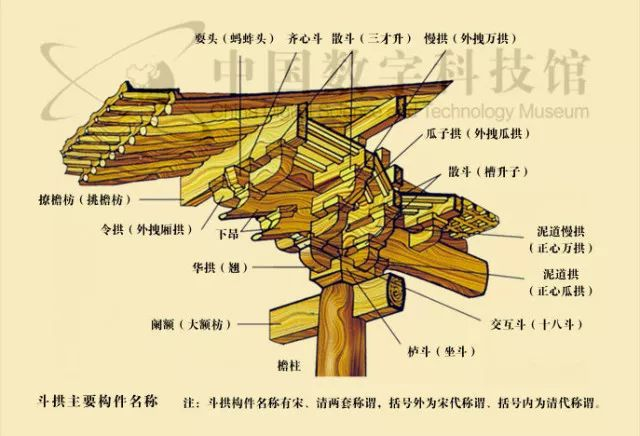
斗拱在古建筑中起着十分重要的作用，主要有四个方面：
一是它位于柱与梁之间，由屋面和上层构架传下来的荷载，要通过斗拱传给柱子，再由柱传到基础，因此，它起着承上启下，传递荷载的作用。
二是它向外出挑，可把最外层的桁、檩挑出一定距离，使建筑物出檐更远，造形更优美、壮观。
三是它构造精巧，是很好的装饰性构件。
四是这种结构和现代梁柱框架结构极为类似。遇有强烈地震时，采用榫卯结合的空间结构虽会“松动”却不致“散架”，消耗地震传来的能量，使整个房屋的地震荷载大为降低，起到抗震作用。
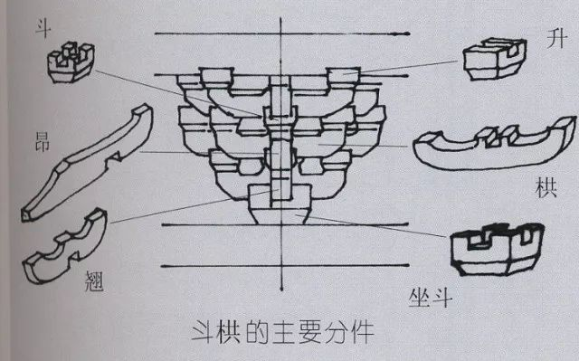
华拱四跳——
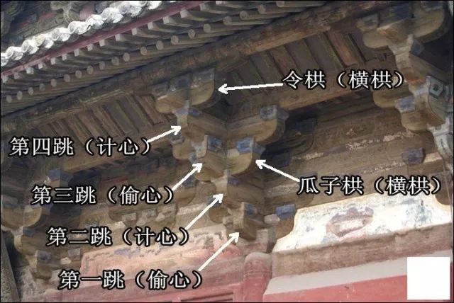
抬梁式、穿斗式、井干式、干阑式四种木结构
其中抬梁式和穿斗式结构最常见，这二者的区别主要是柱子有没有用梁承托檩子，因此在下文梁架的部分讨论。
井干式特点是建筑结构完全由木条十字交叉叠积，用材之间由半刻榫卯相合，形成“井”字平面。

干阑式就是干栏屋、高脚屋、吊脚楼、棚屋，“编竹苫茅为两重，上以自处，下居鸡豚，谓之麻栏”，通常是木头，竹子所构屋梁，并用茅草盖顶遮蔽的住屋，也有柱桩顶端设轭木，较牢固的干栏式建筑。其主要特色是将其楼板垫高，以楼梯上下住所。
干栏式民居除了透气凉爽外，也有避免瘴气，潮湿，淹水，并防止虫蛇进入和抗震的功能，另外，在架设上也较为简易。
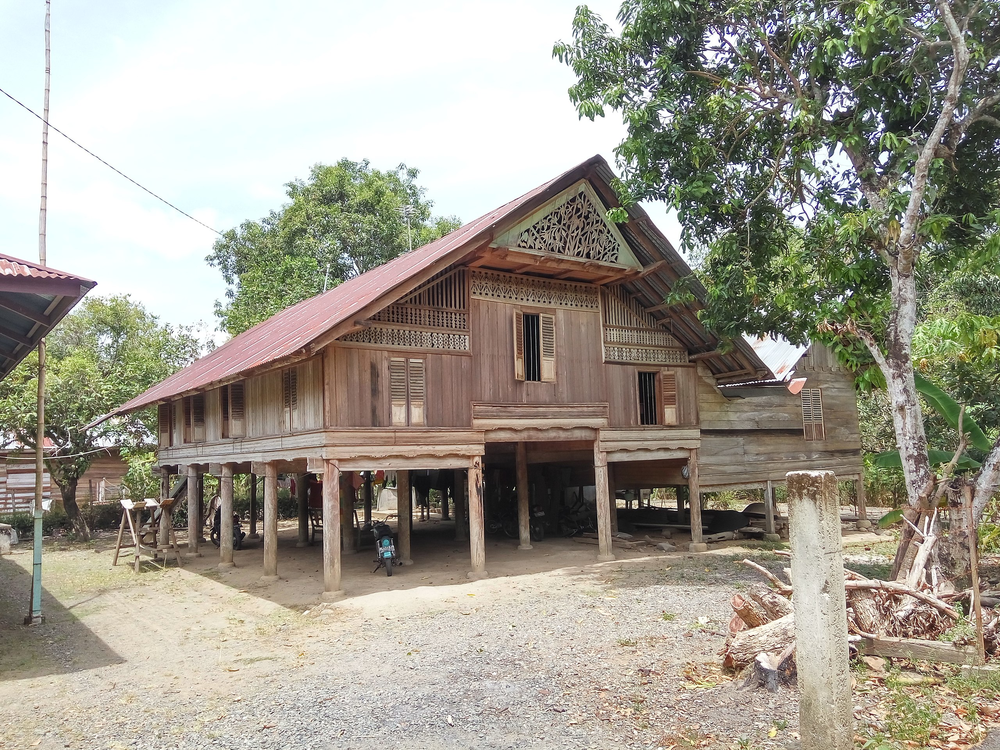
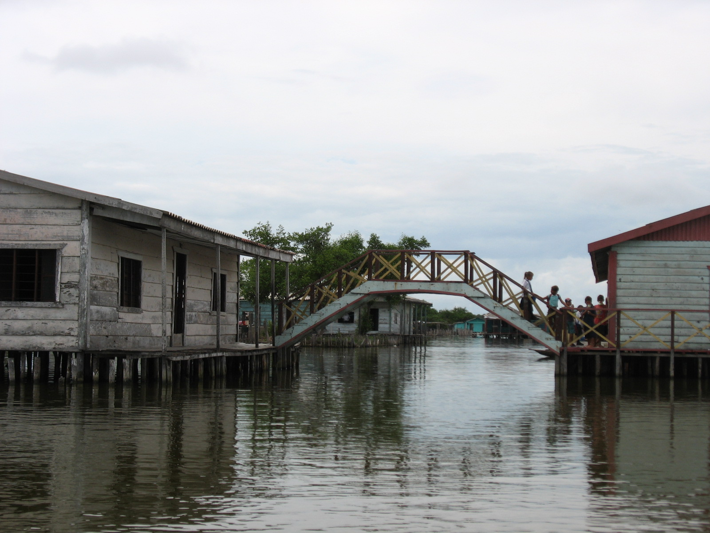
柱梁枋檩椽
柱(column)、梁(栿fú, beam)、枋(fāng)、檩(lǐn, 桁héng, purlin)、椽(chuán, rafter)
构架是由柱、梁、枋、檩等构成的一种木制建筑结构，是木构架建筑物的承重部分，同时又是木建筑比例尺度和形体外观的重要决定因素。属“大木作”，大木作又称大木匠，是指木建筑的营造工艺。
这里简单记录一些我感兴趣的结构。
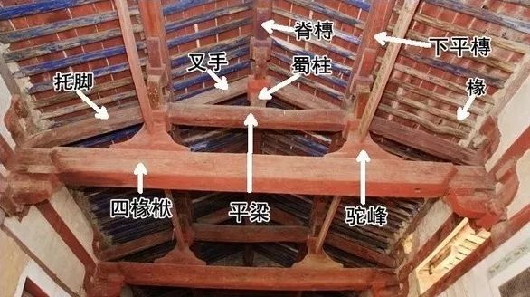
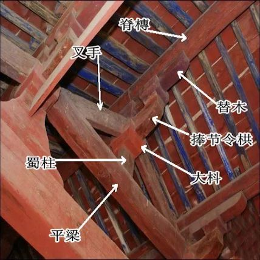
柱
建筑中的垂直主结构件，承托在它上方物件的重量，比如屋檐的重量，是建筑的承重部分。此外还有一些其他较小的柱，这些短柱不是置于地基之上，而是置于梁架之上，承托上方物件的重量，再把这重量透过梁架，传递至主柱之上，例如脊瓜柱或蜀柱。古代柱子多为木造，亦有石柱。为防水、防潮，在主柱与地基间，建有柱础，并在木柱的柱础之上，垫以石櫍(zhì, 泛指器物的足)。
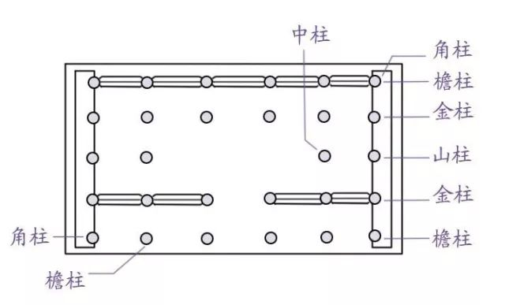
- 檐柱也称廊柱，建筑物檐下最外一列支撑屋檐的柱子，也叫外柱。
瓜柱是立于大梁上用来支承上面梁架的短柱，有的称为“童柱”。其高度大于其直径。
蜀柱（“脊瓜柱、侏儒柱”）是在屋脊部位的三架梁上，用来支撑脊檩的短柱。
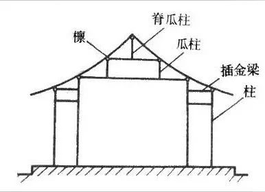
瓜柱、蜀柱
- 驼峰是宋式建筑名词，系用在两层梁之间的垫块，配合斗拱承托梁栿的构件，因起外形似骆驼之背，故名之。
柱础：俗又称磉盘，或柱础石。古代为使落地屋柱不受潮，在柱脚下添了一块石墩，使柱脚与地坪隔离，起到绝对的防潮作用；同时，又是承受屋柱压力的垫基石，柱下的基础，凡是木架结构的房屋，可谓柱柱皆有，缺一不可。
柱櫍：或称柱珠，它是柱身与柱础的过渡部分，因为柱子多为木制，水分易顺着竖向的木纹上升而影响木柱的耐久质量，“櫍”的纹理为横向平置，可有效防止水分顺纹上升，起到保护柱身的作用。“櫍”一般呈扁鼓形，材质有石、木两种。
梁架
中国传统木结构建筑中的一种骨架。一般在柱间上部用梁和矮柱重迭装成，用以支撑屋顶檩条。梁也叫做“柁”，宋则称之为“栿” ，是古建筑的主要木作构件，多指按开间（开间：柱间的距离）方向连贯两柱间的横木，是房屋中承受重量的水平大木。截面可以是圆形的，也可以是矩形。在宋式建筑中，显露在外，一眼能看见的梁，称为明栿，被天花板遮蔽，无法看见的梁，称为草栿。
上文已经讨论过井干式和干阑式两种木结构，这里讨论抬梁式和穿斗式。
相邻屋架间，在各层梁的两端和最上层梁中间小柱（脊瓜柱）上架檩，檩间架椽，构成双坡顶房屋的空间骨架。屋面重量通过椽、檩、梁、柱传到基础（有斗拱时，通过斗拱传到柱上）。这种木结构建筑形式，在我国北方地区比较常见，室内少柱甚至无柱，空间大，所以更为皇家建筑所选，在宫殿、庙宇、寺院等大型建筑中普遍采用，是我国木构架建筑的代表。因为是在立柱上架梁，且梁上又抬梁，这种梁架被称为“抬梁式”屋架，或“叠梁式”屋架。
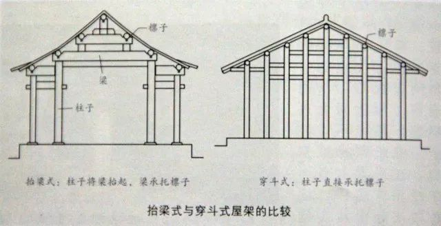
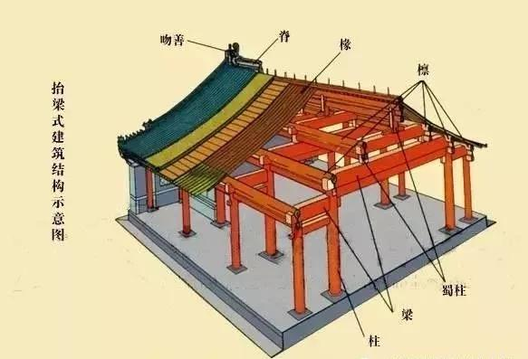
枋、雀替
枋是较小于梁的辅材，也是主要的木作构件，截面为矩形，是方柱形的横木。枋的位置不同，称谓也不同。
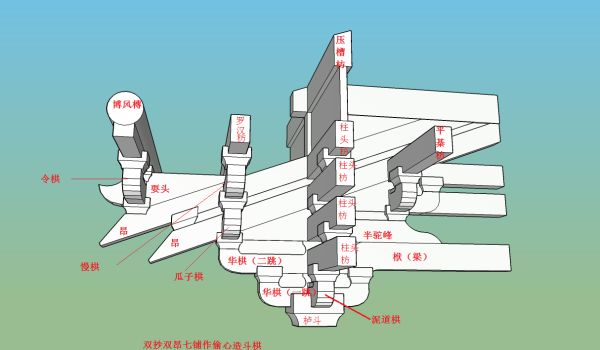
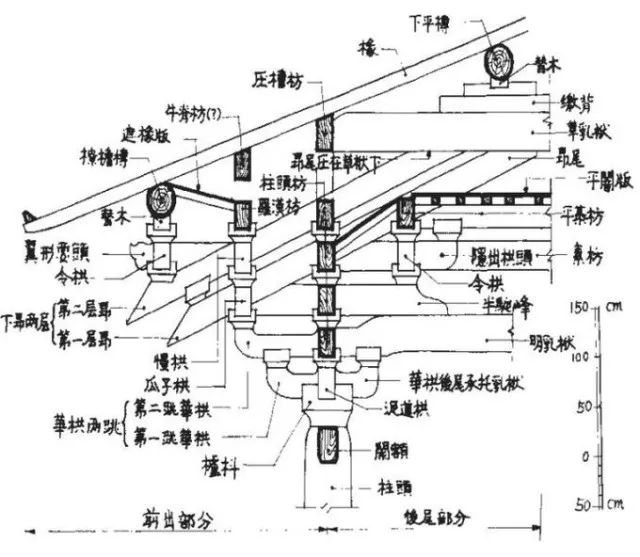
雀替又叫插角，又叫“角替”，在宋代叫做“绰幕枋”，指置于梁枋下与立柱相交的短木，可以缩短梁枋得净跨距离，防止梁枋与立柱之间角度变形。

檩、桁
檩和桁指的是同一个部分，也称“桁条”、“檩条”、“檩子” ，在宋式建筑中称“榑(不知道怎么念，百度百科说bó音时义为斗拱...)”。
实在是有些难以区分，下图是比较清楚的。
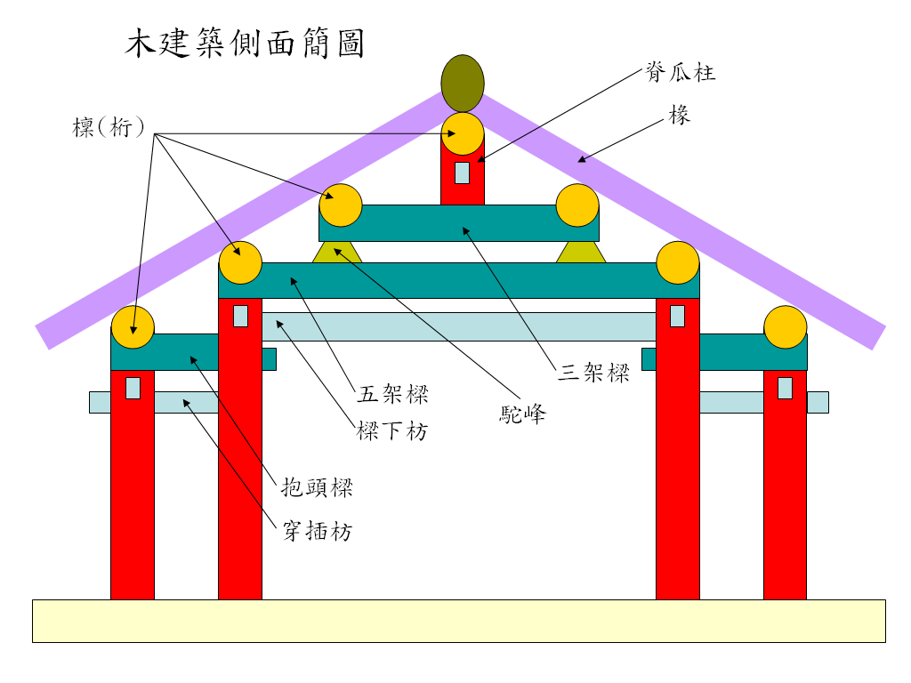
上面这张图里的枋是没有跟梁正交的，这说明不仅跟梁正交的那根横木叫枋，两柱之间起连接作用的横木也可以叫枋。可以看下图，一目了然。
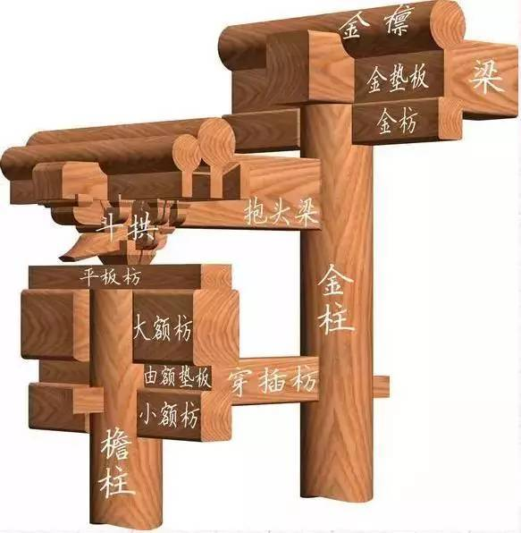
关于梁、枋、檩、椽的区分，
桁和檩是一个意思，桁就是檩，桁（檩）大多是圆木，平行于屋脊，而且最高处的桁（檩）上面盖上瓦就成为屋脊；
搭在桁（檩）上面的是椽子，椽子的作用是将瓦的重量传递给桁（檩）。椽子有圆有方，垂直于屋脊；
桁（檩）下面是一条垫板，垫板下面就是枋了，所以枋的作用是承托桁（檩）。多数（多数！）枋也是平行于屋脊的，枋和梁都是方的；
梁和枋的作用虽然相近，但有不同，梁和枋相互垂直，都架于柱上，平行于屋脊的托着桁的是枋，垂直于屋脊的就是梁。
椽
也叫椽子、椽条。中国古代木构建筑的屋顶都有挑出的屋檐，目的是保护檐口下的木构架及夯土墙少受雨淋。屋檐的主要构件就是椽子，它密集地排列于檩上，并与檩成正交，是支撑屋顶盖材料的圆形木条，其功能是承受屋顶的望板和瓦等材料。
它按屋面坡度铺砌，所以和地面形成角度，而不是水平的。
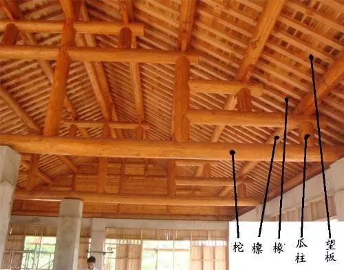
叉手
支撑在蜀柱两侧的木构件。上面部分图里有这个结构。
中国建筑类型
以下列了八类。
- 宫殿
- 城池，《礼记·礼运》记载：“城郭沟池以为固。”因此，城池包括了城墙和护城河，其中“城”指的是城墙及城墙上的门楼、角楼等，“池”指的是护城河。与欧洲国家比较起来，东亚的城郭规模一般较大。
- 民居，下文关于中国建筑风格的讨论均为民居
- 园林，园林意指在人工建筑出来的环境中模拟自然景物，东方园林与西亚、欧洲园林并称为世界三大造园系统，主要分为皇家园林、私家园林、寺庙园林。下面是在苏州平江路和平江河（宋元的时候，苏州又名平江）、艺圃等苏州园林，摄于2022年8月20日。


- 桥梁
- 石窟，起源于古埃及中王国时期的岩窟墓，在新王国时期演变为石窟，在公元前5至4世纪，经波斯传入印度，后通过中亚传入中国。石窟艺术作品包括佛教故事、神话传说、历史人物、民间传说等，比如莫高窟（即敦煌石窟，亦即千佛洞）。
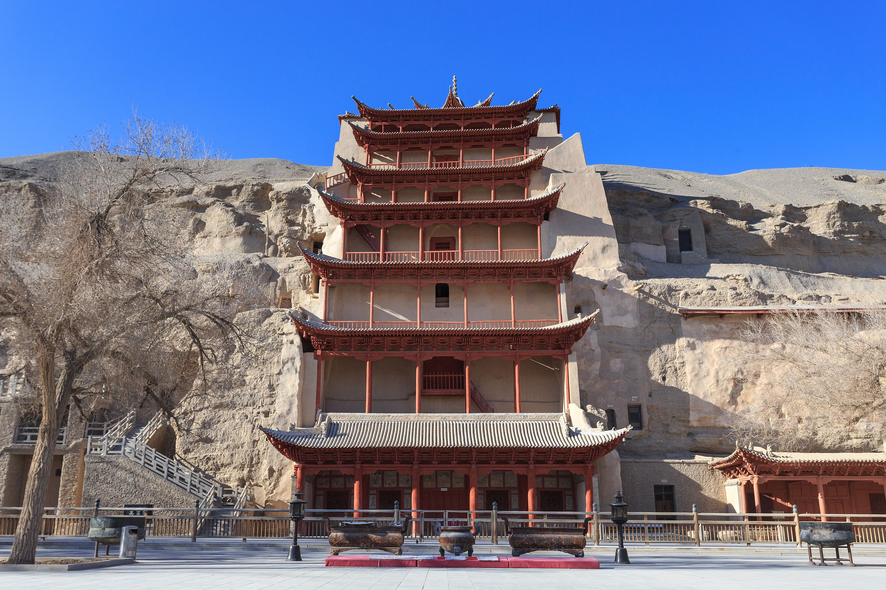
- 古塔，楼阁？是中国的传统建筑楼阁与印度的窣堵坡结合的产物。楼阁为多层建筑物，多建于园林中风景优美的地方，或水陆交通枢纽。最著名楼阁有黄鹤楼、岳阳楼、滕王阁、鹳雀楼，合称四大名楼。

塔本就是给佛教僧侶用作埋骨之用，除了上面的楼阁式塔还有很多种类，比如北海公园的白塔是覆钵式塔（摄于2019年7月17日）。
- 牌坊，简称坊，类似于牌楼，是中国传统建筑中非常重要的一种建筑类型，牌坊不同于牌楼，在立柱和横板上没有斗拱及屋顶结构的称为牌坊，而在立柱和横板上有楼的称为牌楼。下图光华复旦牌坊是1782年乾隆(ᡥᡠᠩ ᠯᡳ)年间存放四库全书的文澜阁竣工时立的，2021年9月6日摄于西湖孤山公园。
中国建筑派系（风格）
以下列了十类。
- 客派，比如土楼（即客家围楼），福建土楼是一种在福建省巨型围绕式建筑，它利用不加工的生土来作为承重墙，外形又像把空旷的内地包围起来，因此用“围”字或“土”形容这种建筑。其功能是四代同堂、居防合一（以抵御倭寇和山贼为目的），总数约三千余座。
- 皖派，徽派就是其中一支。
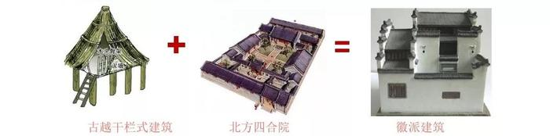
- 闽派，客家跟闽南有一定区别，这可能是维基区分开这俩风格的主要原因（实际上闽南也有土楼）。燕尾脊在闽南和台湾很常见。燕尾脊指的是具有向上弯曲的脊形的屋顶，形状像燕子的尾巴。燕尾可以是单层或双层的。这一特征起源于16世纪（明朝）。当时，福建人正在与东南亚、台湾、琉球和日本做生意。
- 粤派（广府民居、岭南园林，和江南园林、四川园林等并列为中国园林的主要风格之一），广府民居里有镬huò耳屋，其建筑特点是瓦顶建龙船脊和山墙筑镬耳顶，用于压顶挡风，一般是砖木结构。
- 京派，中国北方建筑的典型。
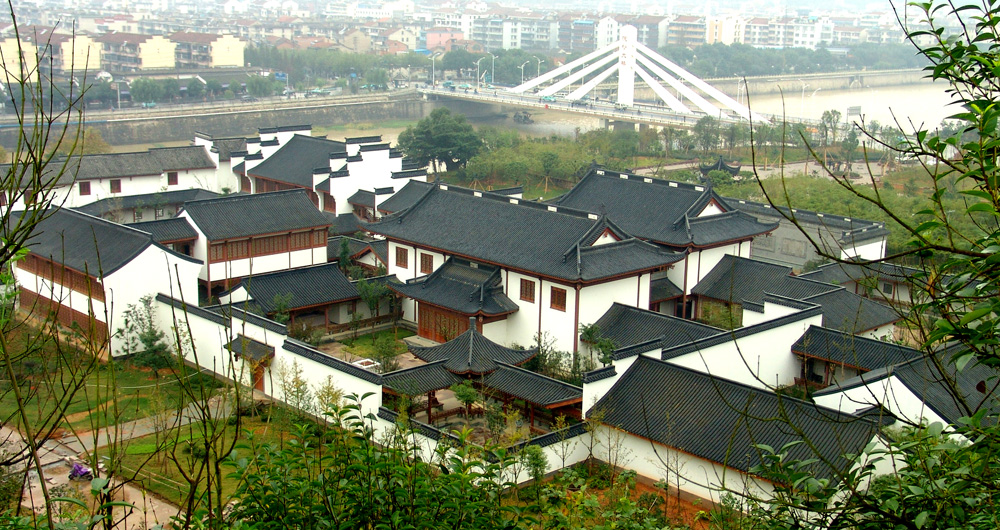
- 苏派（苏州园林）


- 晋派，晋派只是一个泛称，不仅指山西一带，还包括陕西、甘肃、宁夏及青海部分地区。在这些地区中以山西的建筑风格最为成熟，故统称为晋派建筑。晋派建筑总体可分为“山西城市建筑”和“陕北周边的窑洞建筑”两大类。窑洞是黄土高原上的陕西和山西建筑，土窑建筑直接在黄土形成的崖壁上挖孔形成居室。多数在内部加盖砖或石墙，以防止土层倒塌。
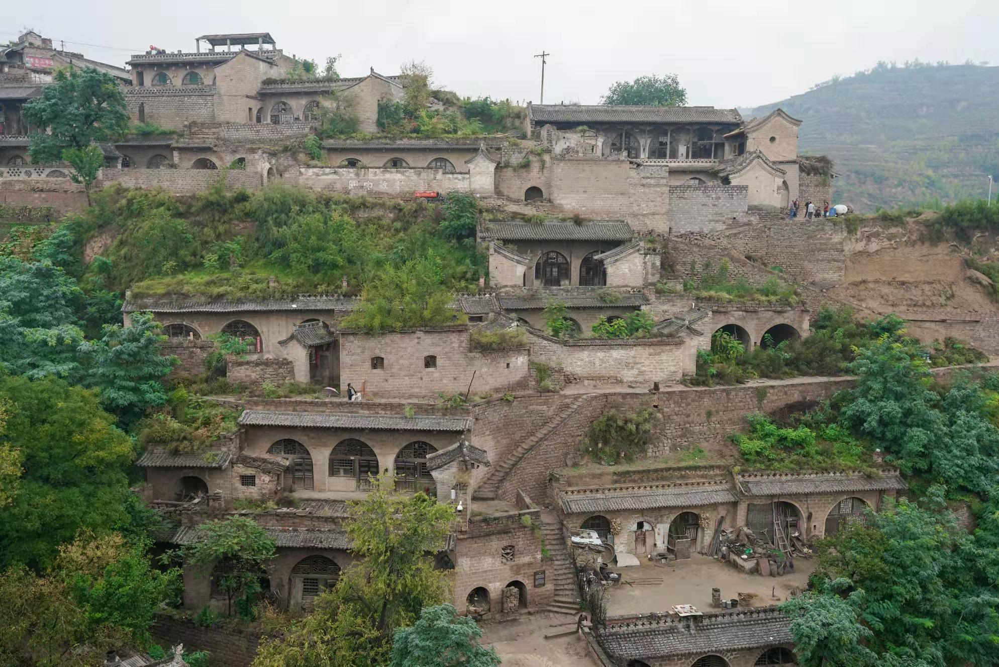
据说还有川派，是云贵川地区少数民族风格，如竹楼鼓楼吊脚楼。这类建筑在上文干阑式建筑里讨论过了。
栱圆形建筑，包括蒙古包和上文的福建土楼。
- 船屋和艇户，中国疍dàn家人是以船为家的渔民。由于他们生活在船艇上，他们的脚与生活在陆地上的人略有差别，士大夫则雅称之为“艇户”。